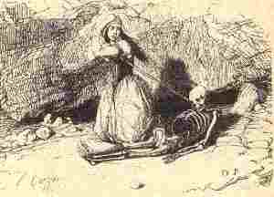

Ur gentel vad

Ton
|
Barzhaz Breizh
I
|
Dornskrid Keransker (p.216+262)
I 1. Silaouit holl, O silaouit Ur burzhud bras a zo degouet. 1v. Klevit, Kristenien, me ho ped Un dra bennag zo nevez erruet. 2. Zo degouet er bloaz tremenet E vourc'h Nizon, tro Nedeleg. 2v. Zo erruet gant Yann Marek Parrez Nizon tro Nedeleg. 3. 'Troc'hañ mouded oamp er park nevez E park Kistilhav ar mintin-se. 3v. 'Trochañ mouded oan an deiz-se, Tal park Kistilhav ar gwener-se. 4. - Yann Marek, pelec'h oc'h-c'hwi bet, Pa zegouit ken diwezhet? 5. Pelec'h peus kousket en noz-mañ? Da evañ chistr dous, e giz-se? 5v. Pelec'h oc'h bet an nozvezh-mañ Da evañ chistr pe bilat avaloù. 6. - Tan ker ruz! Bet on 'n nozvezh-mañ Lec'h oa kavet mat gant Doue! - 7. Ha Yann ar Bleuñv lare dezhañ: - Bez' out-te un tammig mezv, Yann! 8. - N'am eus evet 'med ur skuellad, Med, Tan ker ruz! hennezh oa mad! 9. Ken kreñv a oa evel gwin-ardant; Vat-bras a ree d'ar c'halon-me. 10. - Mont a refec'h kuit soudenn, Yann! Mont a refec'h kuit yaouank-flamm. - 11. Kaer en-devoa sevel e var, Skoe e benn gant an douar. 12. - Chom amañ pelloc'h ne vern ket! Mond a ran da glask un tamm boued. 12 bis. Petra rin ken o chom amañ? Me ya da glask un tamm bara. - 13. Hag eñ lare ' vont gant e hent, 'Vont d'ar ger lare tre e zent: 14. Tan ker ruz! Ar chistr a oa mat! Giz gwin ardant oa ma skuellad! - 14v. Tan ker ruz! Hennezh a oa mat! M'em bije evet deg skuellad! - II 15. - Lorez, n'eo ket deuet da dad 'ger Degouet eo da dad-kaer. 16. - Vez ket degouet da dad e ger? - N'eo ket degouet. Oe en Aljer. 16 bis. En Aljer pe trezeg Kemper. Eñ lare devoa c'hoant ober. - 17. Peder 'zhun a oa tremenet: N'oa ket eñ c'hoazh d'ar ger degouet. 18. N'oa ket deuet e ger Yann Marek Ken a zeuas an deiz Nedelek. 19. Deiz Nedeleg, d'an aberdaez, Teuas d'an ti paotred Sant-Vode. 20.- Yec'hed-mat deoc'h, tud an ti-mañ C'hwi 'peus lien da werzañ dre-mañ? 21.- 'Neus ket tamm da werzañ dre-mañ N'eomp prenet tamm er bloavezh-mañ. - 21v. - 'Neus ket tamm da werzañ dre-mañ Gwerzhet eo bet er bloavezh-mañ. - 22.Hag int o daou deus a Lonch-Dall, Hag int d'er gêr en ur vragal. 23. Pa oant degouet e-kreiz ar c'hoad: - Setu amañ roudoù ur c'had! 24.- Roudoù ur c'had, sur, ned eo ket; Roudoù louarn ne laran ket. 25. Deomp da welled pelec'h eo aet! - Hag int da vont da heul ar roudoù. 26. -Setu amañ un tok koz 'tao! Tok Yann Marek e gredan eo! 27. -Ha tok ho tad emañ, Lorañt? - Tok ma zat , hennezh n'ema ket. - 27v. -Tok ho tad ma amañ, Lorañs, - Tok va zad n'ema ket, 'michañs. 28. Hag int er c'hoad o-daou en-dro Hag int da gavoud ur bragoù. 29. Ur bragoù pelloc'h kreiz ar c'hoad Eñ roeget ha lous gant ar gwad. 30. -Setu e bragoù hag e dok! - Ha Loeiz Sentik da lamm araok: 31v. Ur morvran koz en e c'hichen O wac'hat e beg ur wezenn. 32. Hag eñ da youal spontet-tre: - Setu 'ma amañ, ma Doue! 32v. Jakez Pilorsin a lamme, Hag i da lammed dre ar c'hoad. III 33. E-touez an erc'h oa war e veg. Debret e bouzelloù hag e drei. 34. E daouzorn oa pleg war e fenn. E c'horn-butun en e gichen. 35. Hag e giri, rez e ziv-vron Gant loened gouez, rez e c'halon. 35v. Hag eñ kouet eno war e veg Debret e chouzouk gant ar vleizi. 36. Nemet e zal n'en doa damant, Abalamour d'ar vadeziant. 36 bis. N'e jakod pemp gwennek hanter En-doa bet gant paotr ar maner. 36v. Deuz an arc'hant en-oa gounet Da brenañ butun-mat e ger. 36 ter. E benn-bazh hag e boutoù-koad A zo chomet e-barzh ar C'hoad. 37. Tan oa bet eno 'pad an noz Tall e gichen e wregig kozh 38. E wregig paour eno 'ouelañ Hag e vugale tro-war-dro. 39. Bet int bet eno 'pad an noz Hag an aotroù Maer antronoz. 40 Hag ar c'homiz-kozh d'e glasked Gant un arc'h hag ur penn-kezeg. 41. Hag hen zegasas d'ar vered Heb son ar c'hloc'h na beleg 42. Na son kloc'h na beleg oa bet Gant arc'h hag ur marc'h mintin mat. 43. Hag hen taolas en un toull yen E tok gantañ plom war e beg. 44. Loeiz hag eñ Loeiz Kamm lesañvet Hennezh deus ar werz-mañ savet. 45. Loeiz en-deus savet ar werz-mañ Da gentel-vad da bep unañ. ( v = variante) |
Manuscrit de Keransquer (p.216+262)
I 1. Ecoutez tous, o écoutez, Une chose étonnante vient d'arriver. 1v. Ecoutez, Chrétiens, je vous prie, Ce qui vient d'arriver, (bis) 2. Ce qui est arrivé l'an passé Au bourg de de Nizon aux environs de Noel. 2v. Ce qui arrivé à Jean Marec De la paroisse de Nizon au temps de Noël. 3. Nous faisions des coupes, dans le champ neuf Dans le champ de Kistillau, ce matin-là. 3v. Nous faisions des coupes, ce jour-là Devant le champ de Kistillau, ce vendredi-là. 4. -Jean Marec, où étiez-vous, Que vous arriviez si tard? 5. Où êtes-vous allé cette nuit, Boire du cidre doux, n'est-ce pas? 5v. Où êtes-vous allé cette nuit, Boire du cidre ou piler des pommes? 6. - Sacrebleu! Cette nuit je fus Où Dieu a trouvé bon que je sois. - 7. Et Jean le Bleun lui disait: - Le fait est que vous êtes un peu ivre, Jean. 8. - Mais je n'ai bu qu'une écuellée. Sacrebleu! Qu'elle était bonne! 9. Aussi raide que de l'eau de vie! Et elle m'a mis du baume au coeur!- 10. Vous vous laissez aller, lui dit Louis-le Boiteux, Pour vous laisser ainsi aller vous êtes bien jeune. 11. Il avait beau lever sa houe C'est sa tête qui frappait le sol. 12. - A quoi bon demeurer ici plus longtemps? Je vais chercher de quoi manger. - 12 bis. - A quoi bon demeurer ici? Je vais chercher un morceau de pain. - 13. Et il disait , en cheminant En direction de son logis, il disait entre ses dents: 14. - Sapristi, ce cidre était bon! Comme de l'eau de vie dans mon écuelle! 14v. - Sapristi, ce cidre était bon! J'aurais pu en boire dix écuellées! II 15. Votre père n'est pas rentré? - Non. Il sera allé à Quimper; 16. Ton père n'est toujours pas rentré? Non, il était à Alger 16 bis. A Alger, ou parti pour Quimper: Il disait qu'il voulait faire le voyage. 17. Quatre semaines étaient passées Il n'était toujours pas rentré. 18. Jean Marec n'était toujours pas rentré Lorsqu'arriva le jour de Noël. 19. Le jour de Noël, dans la soirée, Vinrent chez lui des jeunes hommes de Saint-Maudé. 20. -Bonsoir, toute la famille, Vous avez de la toile à vendre par ici? 21. - Plus un morceau à vendre ici. Nous n'avons rien vendu de toute l'année. - 21v. - Plus un morceau à vendre par ici. Tout fut vendu dans le courant de l'année. - 22. Et les deux quittèrent le Lonch-dall Et s'en revinrent en faisant les fous. 23. Ils allaient entrer dans le bois: - Regardez, dans la neige, des traces de lièvre! 24. - Des traces de lièvre, ça, jamais de la vie! Je dirais plutôt, des traces de renard. 25. Allons voir où elles mènent: Et les voilà qui suivent les traces. 26. - Voilà toujours un vieux chapeau! C'est celui de Jean Marec, je crois. 27. - C'est là le chapeau de votre père, Laurent? - Le chapeau de mon père? Sûrement pas. - 27v. - C'est là le chapeau de votre père, Laurent? - Non, espérons-le! - 28. Puis, les deux sont retournés au bois, Et ils y ont trouvé un pantalon. 29. Un pantalon, plus loin, au milieu du bois. Il était déchiré et maculé de sang. 30. - C'est là son pantalon et son chapeau! Et Louis Sentic courait devant. 31v. Un vieux cormoran non loin de là Coassait en haut d'un arbre. 32. Et Louis de hurler en proie à l'épouvante: - Mon Dieu, le voilà! 32. Jacques Pilorsin accourut Et le voilà qui s'enfuit à travers bois! III 33. Il gisait là dans la neige, face contre terre, Ses entrailles et ses jambes avaient été dévorées. 34. Ses mains étaient jointes sur sa tête Sa pipe était à son côté. 35. Et ses jambes , jusqu'au ras de la poitrine Dévoré par les bêtes sauvages, jusqu'au coeur. 35v. Il était tombé la tête la première Et les loups avaient mangé son cou, 36. Seul son front avait été épargné En raison du baptème. 36 bis. Dans sa poche cinq sous et demi Que lui avait donné l'intendant du manoir. 36v. C'était l'argent qu'il avait gagné: C'était pour acheter du bon tabac en ville. 36 ter . Son bâton à bout ferré et ses sabots Etaient restés dans le bois. 37. On alluma un feu qui brûla toute la nuit, A son côté sa vieille femme 38. Sa vieille femme qui pleurait Et ses enfants qui l'entouraient 39. Ils l'ont veillé toute la nuit Et le lendemain Monsieur le maire est venu. 40. Et le vieux commis vint le chercher Avec une jument et un cercueil. 41. Et il le porta au cimetière Sans son de cloche ni prêtre. 42. Ce fut sans son de cloche ni prêtre Avec un cercueil et un cheval dès potron-mminet. 43. Et il le jeta dans la fouille froide Tout en gardant son chapeau sur la tête. 44. Louis, dit Louis le Boiteux A composé la gwerz que voici. 45. Cette gwerz que Louis a composée, Puisse-t-elle être une leçon pour chacun! ( v = variante) |
Keransquer MS (p.216+262)
I 1. Listen, all, O listen! Something astounding occurred. 1v. Listen Christians, if you please, Something new occurred. 2. Occurred last year In the town Nizon, around Christmas. 2v. Occurred to John Marec From Nizon town around Christmas. 3. We were breaking clods of earth in the new field, In Kislillau estate that morning. 3v. We were breaking clods on that day, Before Kislillau estate, on that Friday. 4. - John Marec, say, where have you been, Why are you coming so late? 5. Where did you sleep last night? Have you been drinking mild cider, maybe? 5v. Where have you been all night? Drinking cider or crushing apples? 6. - Confound it! Last night I've been there Where God decided that I would be. - 7. And John Le Bleun said to him: - In fact, John, you're a bit tipsy! 8. - In fact I drank but a mugful But, confound it! It was damned good! 9. As strong it was, as brandy! To my heart it was like candy. 10. You shall leave this world, suddenly, John, Though you're not that old, - 11. Try to hoe as he would, instead, He would hit the ground with his head. 12. - What's the use of my staying here any longer! I'll go and fetch some food.- 12. - What's the use of my staying here! I'll go and fetch a piece of bread.- 13. And he was heard, as he went home Grumbling t' himself in a low tone: 14. - This cider was good, and no doubt And was worth a real drinking bout! 14v. - Confound it! It was a good drink, I could have drunk ten mugfuls of it! II 15. - Is your father not yet back home? - No, to Quimper he must have gone. 16. - Is your father not yet back home? How would he? He was to Algiers. 16bis. To Algiers or else to Quimper, He often told he would go there. - 17. Four weeks went by and he was still Not returning and was missing. 18. He was still missing, John Marec When Christmas day arrived. 19. At Christmas in the afternoon Young men of Saint-Maudé came round. 20. -Good afternoon, everybody here! Have you some cloth in store to sell? 21. - We have not a piece left to sell Nothing was sold in the year past. - 21v. - We have not a piece left to sell Everything was sold in the year past. - 22. The young men left Lonch-dall house And went on their way, frolicking. 23. Near the wood, one cried: "Hey, look there! Look, in the snow: tracks of a hare! 24. - They don't look like tracks of a hare. Tracks of a fox, that's what they are. 25. Now, let us see where it has gone! - And they started following the tracks. 26. - Here is, to begin with, a hat! Which, I think, John Marec has lost. 27. -Is this, Lawrence, your father's hat? - Oh, my God, I would not say that! - 27v. -Is this, Lawrence, your father's hat? - Oh, my God, I hope it is not! - 28. The two of them entered the wood And there they have found breeches. 29. Breeches, further, amidst the wood. They were torn and were stained with blood. 30. - These are his breeches and his hat! - And Louis Sentic ran ahead. 31v. And an old cormorant was cawing Atop a tree, not far from there. 32. And he set to shriek in dismay: - Oh my God! Here is where he lay! 32v. James Pilorsin who had run near, Took to his heels across the wood! III 33. He lay in the snow With his face to the ground, His entrails and his legs were devoured. 34. He held his folded hands over his head. His pipe lay beside him. 35. And his legs and chest and stomach, Up to his heart, were devoured by wild beasts. 35v. He had fallen on his face. Wolves had devoured his neck. 36. They had spared only his forehead That baptism had protected. 36 bis. In his pocket, 5 pence and a half-penny. Given to him by the steward of the manor. 36 v. It was the money that he had earned With which he would have bought good tobacco in town. 36 ter. His iron tipped stick and his clogs Were left in the wood. 37. A fire for the night was made. His old wife woke by his side, 38. On her knees, and she cried, Surrounded by their children. 39. And they woke all through the night. The lord mayor came next morning. 40. The old gravedigger fetched the corpse In a coffin drawn by a horse. 41. And he brought it to the churchyard Without bell tolling or vicar. 42. Without bell tolling or vicar Without cross or holy water. 43. Into the cold hole he threw John And, doing this, kept his hat on. 44. Louis, alias Lame Louis, Composed the lament you have heard. 45. He made this lament which is sure To be for all a sound lecture. ( v = variante) |